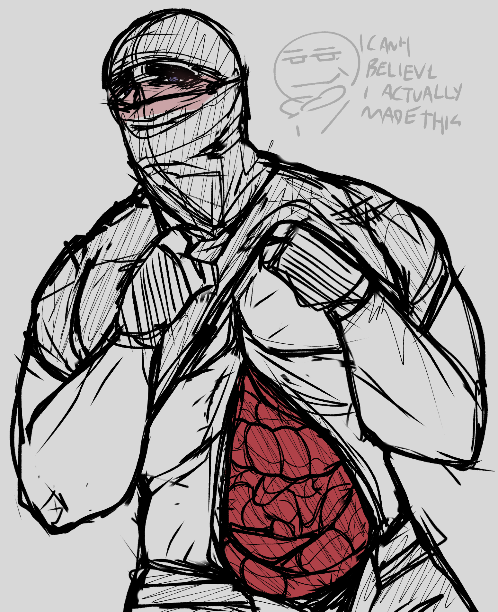
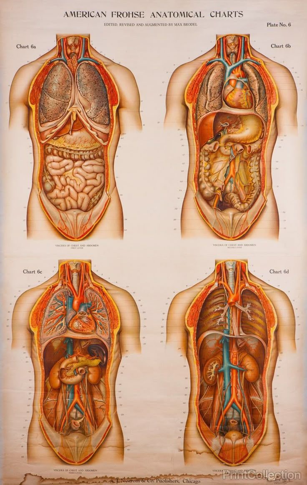

BreadTheEnd The Website
GORE SHRINE


CONTENT/TRIGGER WARNING: Gore/Guro, NSFL content in general. Such as: Multilation, Torture, Cannibalism, Murder, Kidnapping, Eye stuff, Teeth stuff, etc. If you are uncomfortable with any of these topics DO NOT SCROLL DOWN!!!
For some ungodly reason ever since I was a kid I was fascinated by the human body. And the ways it could be teared apart and kept alive. And yes, while I WAS a scared cat as a kid, that did not mean I could escape disturbing nightmares. I've had so many of them where I was tortured, drowned or hurt in some way, at some point, you just gotta start enjoying it haha.
This page will feature: Torture ideas I had, my art, eye-candy (for me at least), misc (musics and movies) and first-aid tips.
-----------------------------------------------------------------------------------------

I dedicate this page to my husdband Sal, whom I love very much
For some ungodly reason ever since I was a kid I was fascinated by the human body. And the ways it could be teared apart and kept alive. And yes, while I WAS a scared cat as a kid, that did not mean I could escape disturbing nightmares. I've had so many of them where I was tortured, drowned or hurt in some way, at some point, you just gotta start enjoying it haha.
This page will feature: Torture ideas I had, my art, eye-candy (for me at least), misc (musics and movies) and first-aid tips.
-----------------------------------------------------------------------------------------
I dedicate this page to my husdband Sal, whom I love very much
TORTURE IDEAS
An assortment of torture methods ideas I had throughout my life
-
IDEA 1: FARIESWhen I was a kid, I liked watching the Tinkerbell movies but mostly because I wanted to keep a fairy for myself and sell their flying magic powder (mind you, I was less than 10), and my plan was kinda simple. Cut off their legs and glue the stumps to the bottom of a jar, then fill the jar with water up to the fairy's neck so even if they unglue themselves from the jar they still can't fly away. I even remember being tempted to straight up cut off the arms as well hehe. Can't blame a kid for being silly
-
IDEA 2: THE HANDSI have a horrible habit of cutting my nails way too short to the point it bleeds, so I'm always imagining if it were easier for me to just rip them off. Unfortunally they do grow back so it wont work :/
-
IDEA 3: THE SKINThere's a lot of things you can do with the skin, mostly by first turning it into leather. Flaying the back or arms just seems satisfactory.
-
IDEA 4: VIVISECTIONbro imagine seeing the body work in real time? damnn...also its hot and intimate HELLO??
-
IDEA 5: EYEBALLS...i just like anything w eyeballs....sighs dreamingly
-
IDEA 6: shock collarI'm studying eletrical engineering and if by the end of it i can't build my own shock collar what's the point. okay listen dog shock collars are forbidden in brasil howeever...if i make one for a human...???idk im still researching lmaoooo
-
IDEA 7: torture machinesI almost chose a civil engineering college because of Saw. The traps are just so creative and cool and hot and I wanna build my own. I'm still to dumb to make them BUT there's nothing I can't learn.
MY ART
I haven't made that much stuff yet...

Fanart of Diego Cortez from SAW X, this image also feature Nik's art and Raki's art
Drawing of my oc G.M.S

Lenseless Mark art but since I didn't use any references I made his large intestines extremelly long lmao

Lenseless Mark art but using references (Modische Atlas der Anatomie by Koen Hauser)
EYE CANDY
Assorted things that I think are beautiful, most of them i find on Pinterest but I try to find the actual origin of most of them
Modische Atlas der Anatomie by Koen Hauser

1543 Abdominal Viscera
I couldn't find the orignal, however graphic designer cxeurl (on Instagram) makes some posters with a smilar vibe

Cannibal Pride Flag made by PolposLighter (on Twitter)(The account is suspended tho and I'm not aware if the creator has since made a new one)
Could not find source
Saw X poster. (Bro this shit ain't even a horror movies this is straight up bdsm look at this poster)
Love
Saw X Valentina
INVINCIBLE Comic art
Jinrou Game manga chapter art. (The manga is kinda mid but the gore looks awesome)
Frohse Anatomical Charts
Anatomy ilustration possibly from a russian book
Could not find source
Drawing of the Reverse Bear Trap from Saw.
Cape of the Fangoria magazine with a Saw X scene
hmhmhfmhfmhf wound fingering drools

Diego Cortez in his Saw Trap (Saw X)
The Poughkeepsie Tapes poster

I couldn't find the source
Could not find source - I added this image for my husdband
Saw X Mayan calendar poster
Saw X BEHIND THE SCENES of Diego's trap (The pipebombs)
The Reverse Bear Trap from Saw

Saw 0.5 scene
Saw 0.5 scene
INVINCIBLE Comic art

Saw poster
FIRST AID TIPS
Just some tips for those post-consensual-mutual-multilation moments
-
FIRST TIP: CLEANNING THE WOUNDWe don't want any infections do we? Anti-septics, such as alcohool, chlorhexidine or good ol soap and water will do. Mostly to make sure the wound is not infected.
-
SECOND TIP: STOPPING THE BLOODThere's many ways to do it, use all if necessary. Close the wound (if possible) and pressing against it, cover with bandages (after wiping away most of the blood) then put an ice pack over it. Depending on the size of the wound its better to let it breath after it stops bleeding, to heal faster. DO NOT USE A TOUNIKET UNLESS THE LIMB IS COMPLETELLY MISSING!!! AS IT COMPLETELLY STOP BLOOD CIRCULATION!!! Hot bath may cause wounds to start bleeding again, so..uh sorry ICE BUCKET CHALLENGE TIME!!!
-
THIRD TIP: SCARSSun exposure and genetics can make some scars end up more visible. To hide them, once while it heals hide it from the sun and ask your demarthologist for creams.
-
FOURTH TIP: BLOOD CLEANINGDO NOT FUCKING USE WHITE/LIGHT COLORED CLOTHING!!! ITS A PAIN IN THE ASS TO CLEAN THEM. Use a protective sheet if possible or dark clothing since those hide blood stains easier. Keeping the cloth in cold water w/ some soap can help a little. Cleaning products that help with stains are very usefull. Better to handwash them. You can still see it under UV light tho, i will not tell you how to get rid off the uv stain.
-
FIFTH TIP: HEMATOMASRed/inflamated bruises after being hit are fairly easy to treat, just put ice. That's it. After 24h once the bruise is purple-ish put something warm on it. As you can see ice/warmth packets are keys for these lmfao.
-
SIXTY TIP: PLACES TO AVOIDThis also is important for shibari/ropes/biting. You basically don't wanna injure any main circulation places like neck, ankles, wrists, hips, armpits. Places like the arms and thighs CAN be cut but you have to be carefull of the way you cut them. Fingertips (specially around the nails) are just so easily infected its mostly an annoyance to heal. t r u s t me.
-
SEVENTH TIP: BLOOD TYPESIf you're both getting bloodied just...make sure y'alls blood types re compatible, just in case, bcs if it reaches the blood stream it could cause a severe immune reaction.
-
EIGHT TIP: BURN MARKSFun fact! Lime/Lemon/Acidic things, if in contct with the skin then exposed to the sun, it can cause severe burning!! Anyways, for minor burns put it in cool (NOT COLD) water, apply lotion and cover the burn with a loose bandage. The skin will be dry so lotion is a big help
-
And last but not least! Give your beloved lotsa kisses and sweet drinks and love and move love :)